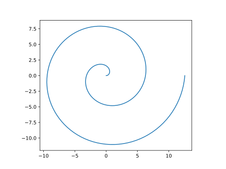

第13回：複素数
■ 複素数を作る
以下では、x, y は Int64 型または Float64 型の数とする。
関数
complex(x)は、実部が $x$ の複素数を作る。関数
complex(x,y)は、実数部(実部)が $x$、虚数部(虚部) が $y$ の複素数を作る。複素数の型は、実部と虚部の方に合わせて
Complex{Int64}またはComplex{Float64}となる。$x, y$ でInt64とFloat64型が混在した場合には。後者になる。
julia> complex(1)
1 + 0im
julia> complex(1.0)
1.0 + 0.0im
julia> complex(1.0, -1.0)
1.0 - 1.0im定数 im は虚数単位である。これは、complex(0,1) または complex(0.0,1.0) と同じ意味である。 複素数 $x+iy$ を作るのに、以下のように書いてもよい （が、乗算と加算の演算を含むので、関数 complexを使うほうが好ましい )。
julia> 1 - 1im
1 - 1im
julia> 1.0 - 1.0im
1.0 - 1.0im▶ 複素数と整数・浮動小数点数との四則演算
複素数と整数または浮動小数点数との四則演算は、演算子 +, -, *, / を用いる。
julia> z = complex(1,-1)
1 - 1im
julia> z + 2
3 - 1im
julia> z - 2
-1 - 1im
julia> z * 2
2 - 2im
julia> z / 2
0.5 - 0.5im零 0 による除算は、実部と虚部の各々で行われ、Inf ないし NaN の値となる。
julia> complex(1,0) / 0
Inf + NaN*im▶ 複素数同士の四則演算
複素数同士の四則演算にも、演算子 +, -, *, / を用いる。
julia> z = complex(1,-1)
1 - 1im
julia> w = complex(2,-2)
2 - 2im
julia> z + w
3 - 3im
julia> z - w
-1 + 1im
julia> z * w
0 - 4im
julia> z / w
0.5 - 0.0im複素数を値とする変数に対して、更新演算子 +=, -=, *=, /= も使える。
julia> z *= w
0 - 4im▶ 複素数のベクトル
整数または浮動小数点数のベクトルを作るのと同様な方法で、複素数のベクトルを作ることができる。
julia> [ complex(0,0), complex(1,0), complex(1,1) ]
3-element Array{Complex{Int64},1}:
0+0im
1+0im
1+1im
julia> [ complex(i,2i) for i in -2:2 ]
5-element Array{Complex{Int64},1}:
-2-4im
-1-2im
0+0im
1+2im
2+4im複素数の零 complex(0.0,0.0) を 5個含むベクトルを作るには、以下のように書けばよい。
julia> zeros( Complex{Float64}, 5)
5-element Array{Complex{Float64},1}:
0.0+0.0im
0.0+0.0im
0.0+0.0im
0.0+0.0im
0.0+0.0im▶ 複素数の実部・虚部・共役複素数
関数
real(z)は複素数zの実数部(実部)を返す。関数
imag(z)は複素数zの虚数部(虚部)を返す。
julia> z = complex(1,-1)
1 - 1im
julia> real(z)
1
julia> imag(z)
-1複素数ベクトルの各要素の実部ないし虚部を計算するには、dot記法を用いる。
julia> zs = [ complex(0,0), complex(1,0), complex(1,1), complex(0,1), complex(0,0)]
5-element Array{Complex{Int64},1}:
0+0im
1+0im
1+1im
0+1im
0+0im
julia> real.(zs)
5-element Array{Int64,1}:
0
1
1
0
0
julia> imag.(zs)
5-element Array{Int64,1}:
0
0
1
1
0関数
conj(z)は複素数zの共役(きょうえき)複素数 (conjugate complex number) を返す。
julia> z = complex(1,-1)
1 - 1im
julia> conj(z)
1 + 1im▶ 負の数に対する平方根
平方根 sqrt(x)は、負の実数 x に対して例外を出すが、引数を複素数の引数を与えれば計算できる。
julia> # 例外を出す
sqrt(-1)
ERROR: DomainError:
julia> # 計算できる
sqrt(complex(-1))
0.0 + 1.0im正負の実数に対して、平方根の実部と虚部をプロットしよう。
using PyPlot
xs=-1:0.05:1
zs=complex.(xs)
sqzs=sqrt.(zs)
plot(xs, real.(sqzs), label="real part")
plot(xs, imag.(sqzs), label="imaginary part")
xlabel("x")
ylabel("sqrt of x")
legend()
xlim(-1.5,1.5)
ylim(-1.5,1.5)
axhline(0, lw=0.5, color="k")
axvline(0, lw=0.5, color="k")
plt[:axes]()[:set_aspect]("equal")◀ 2次方程式の解：一般の場合
2次方程式 $x^2-bx+c=0$ の解を求める方法について、▶︎ 2次方程式 で紹介したが、実数解のみに留めていた。 以下では、複素数解を含めて求めてみる。
係数 $b=1$ を一定とし、係数 $c$ を $-1$ から $1$の範囲で動かす。 一方の $x_1$ は、2次方程式の解の公式で求め、 他方の解は、係数と解の関係により求めよう。
using PyPlot
b=1
cs=linspace(-2,2)
ds=complex(b.*b-4cs)
x1s=(b+sqrt.(ds))/2;
x2v=cs./x1s;
plot(cs, real.(x1s), "b-", label="x1, real part")
plot(cs, imag.(x1s), "b:", label="x1, imag part")
plot(cs, real.(x2v), "g-", label="x2, real part")
plot(cs, imag.(x2v), "g:", label="x2, imag part")
legend()
xlabel("c")
xlim(-2.5,2.5)
ylim(-2.5,2.5)
axhline(0, lw=0.5, color="k")
axvline(0, lw=0.5, color="k")
plt[:axes]()[:set_aspect]("equal")実部を実線で、虚部を点線で表した。
定数 $c$ の値により、解の形が異なる様子が観察できる。すなわち、
範囲 $c \lt \dfrac{1}{4}$ では実数解 (虚数部は零)
範囲 $c = \dfrac{1}{4}$ では重解 $\dfrac{1}{2}$
範囲 $c \gt \dfrac{1}{4}$ では複素解 (共役複素数)
▶ ガウス平面
複素数 $x + i y$ は、平面上の点 $(x,y)$ と一対一に対応する。複素数を平面に表したものをガウス平面という。
using PyPlot
z = complex(1,1)
w = complex(-2,1)
plot( real(z), imag(z), "b.", label="z")
plot( real(w), imag(w), "r.", label="w")
legend()
xlabel("real part")
ylabel("imag part")
xlim(-3,3)
ylim(-3,3)
axhline(0, lw=0.5, color="k")
axvline(0, lw=0.5, color="k")
plt[:axes]()[:set_aspect]("equal")複素数を要素とするベクトルをガウス平面にプロットして、図形を描こう。
using PyPlot
zs = [ complex(0,0), complex(1,0), complex(1,1), complex(0,1), complex(0,0)]
plot( real.(zs), imag.(zs), ".-")
xlabel("real part")
ylabel("imag part")
xlim(-2,2)
ylim(-2,2)
axhline(0, lw=0.5, color="k")
axvline(0, lw=0.5, color="k")
plt[:axes]()[:set_aspect]("equal")▶ 複素数の絶対値と偏角
関数
abs(z)は、複素数zの絶対値 $\left\vert{z}\right\vert$ を返す。関数
abs2(z)は、複素数zの絶対値の2乗 $\left\vert{z}\right\vert|^{2}$ を返す。関数
angle(z)は、複素数zの偏角 $\angle{z}$ をラジアンで返す。結果(値域)は $-\pi$ から $\pi$である。
これは、ガウス平面上で、複素数を極座標で表示したものに対応している。次の ▶ オイラーの公式 も参照。
julia> for z in [ 0, complex(1,1), 1im, complex(-1,1), -1, complex(-1,-1), -im, complex(1,-1), ]
@show z, abs(z), angle(z)
end
(z, abs(z), angle(z)) = (0 + 0im, 0.0, 0.0)
(z, abs(z), angle(z)) = (1 + 1im, 1.4142135623730951, 0.7853981633974483)
(z, abs(z), angle(z)) = (0 + 1im, 1.0, 1.5707963267948966)
(z, abs(z), angle(z)) = (-1 + 1im, 1.4142135623730951, 2.356194490192345)
(z, abs(z), angle(z)) = (-1 + 0im, 1.0, 3.141592653589793)
(z, abs(z), angle(z)) = (-1 - 1im, 1.4142135623730951, -2.356194490192345)
(z, abs(z), angle(z)) = (0 - 1im, 1.0, -1.5707963267948966)
(z, abs(z), angle(z)) = (1 - 1im, 1.4142135623730951, -0.7853981633974483)▶ オイラーの公式
実数 $\theta$ に対して、指数関数 $\exp{i\theta}$ は、以下のように書き表される。これをオイラーの公式という。
指数関数は、複素数を引数とするように拡張されている。 $\exp{i\theta}$ をガウス平面上にプロットしよう。これは、単位円 (半径1)の円を描く。
using PyPlot
zs = [ exp(im*t) for t in 0:pi/18:2pi ]
plot( real.(zs), imag.(zs), ".")
xlabel("real part")
ylabel("imag part")
axhline(0, lw=0.5, color="k")
axvline(0, lw=0.5, color="k")
plt[:axes]()[:set_aspect]("equal")関数 cis(x) は、数 xに対して $\exp{i x}$ を計算する。同じ結果が得られることを確認しよう。
using PyPlot
zs = [ cis(t) for t in 0:pi/18:2pi ]
plot( real.(zs), imag.(zs), "o")
zs = [ exp(im*t) for t in 0:pi/18:2pi ]
plot( real.(zs), imag.(zs), ".")
xlabel("real part")
ylabel("imag part")
axhline(0, lw=0.5, color="k")
axvline(0, lw=0.5, color="k")
plt[:axes]()[:set_aspect]("equal")◀ ガウス平面内で回転させる
複素数に $\exp(i \theta)$ を乗ずることは、ガウス平面上で、原点に対して、反時計方向に角度 $\theta$ だけ回転することに相当する。
using PyPlot
r15 = cis(pi*15/180)
zs = complex(1,1)
for i in 1:10
plot( [0, real.(zs)], [0, imag.(zs)], ".-")
zs *= r15
end
xlabel("real part")
ylabel("imag part")
axhline(0, lw=0.5, color="k")
axvline(0, lw=0.5, color="k")
xlim(-2,2)
ylim(-2,2)
plt[:axes]()[:set_aspect]("equal")◀ アルキメデスの渦を描く（複素数版）
実数 $t$ に対して、複素数 $z=t \exp(i t)$ の軌跡を、ガウス平面上に描いてみよう。 これは、アルキメデスの渦である。参考 → ▶︎ アルキメデスの渦を描く
using PyPlot
ts=linspace(0,4pi, 200)
zs=ts.*exp.(im*ts)
plot(real.(zs), imag.(zs) )
plt[:axes]()[:set_aspect]("equal")
◀ 複素数同士の乗算の意味
複素数同士の乗算は、極座標で表示すると、その意味が明らかになる。
オイラーの公式を使うと、複素数 $z, w$ は、その絶対値と偏角を用いて、以下のように書いて、
複素数 $z$ と $w$ の積を求めると、次のようになる。
つまり、積 $zw$ の絶対値は、2つの複素数の絶対値の積である。 また、積 $zw$ の偏角は、2つの複素数の偏角の和である。
まとめると、複素数同士の積は、ガウス平面上で拡大縮小と回転を同時に行う演算である。
using PyPlot
z = 1*cis(pi/3)
w = 2*cis(pi/4)
zw=z*w
plot( [0, real(z)], [0, imag(z)], "r.-", label="z")
plot( [0, real(w)], [0, imag(w)], "b.-", label="w")
plot( [0,real(zw)], [0,imag(zw)], "g.-", label="z*w")
zs = [ cis(t) for t in 0:pi/18:2pi ]
plot( real.(zs), imag.(zs), "r", lw=0.5)
plot( real.(2zs), imag.(2zs), "g", lw=0.5)
legend()
xlabel("real part")
ylabel("imag part")
axhline(0, lw=0.5, color="k")
axvline(0, lw=0.5, color="k")
xlim(-3,3)
ylim(-3,3)
plt[:axes]()[:set_aspect]("equal")
◀ 複素数の平方根とは
上の特別な場合として、$z$ の二乗を検討する。 $w=z$ として、以下を得る。
これから、$z$の平方根は、以下のように求められる。
数値例。
z = complex(-1, sqrt(3));
@show z, abs(z), angle(z);
w= sqrt(z);
@show w, abs(w), angle(w);(z, abs(z), angle(z)) = (-1.0 + 1.7320508075688772im, 2.0, 2.0943951023931957)
(w, abs(w), angle(w)) = (0.7071067811865476 + 1.224744871391589im, 1.4142135623730951, 1.0471975511965976)using PyPlot
z = complex(-1, sqrt(3))
w = sqrt(z)
plot( [0, real(z)], [0, imag(z)], "r.-", label="z")
plot( [0, real(w)], [0, imag(w)], "b.-", label="sqrt(z)")
zs = [ cis(t) for t in 0:pi/18:2pi ]
plot( real.(zs)*2, imag.(zs)*2, "r", lw=0.5)
plot( real.(zs)*sqrt(2), imag.(zs)*sqrt(2), "b", lw=0.5)
legend()
xlabel("real part")
ylabel("imag part")
axhline(0, lw=0.5, color="k")
axvline(0, lw=0.5, color="k")
xlim(-3,3)
ylim(-3,3)
plt[:axes]()[:set_aspect]("equal")◀ 図形を回転する
複素数に $\exp(i \theta)$ を乗ずることは、 ガウス平面上で、原点に対して、反時計方向に角度 $\theta$ だけ回転することに相当する。 平面図形を複素数ベクトルとして表して、図形を回転しよう。
using PyPlot
r15 = cis(pi*15/180)
zs = [ complex(0,0), complex(1,0), complex(1,2), complex(0,0)]
for i in 1:10
plot( real.(zs), imag.(zs), ".-")
zs *= r15
end
xlabel("real part")
ylabel("imag part")
xlim(-3,3)
ylim(-3,3)
axhline(0, lw=0.5, color="k")
axvline(0, lw=0.5, color="k")
plt[:axes]()[:set_aspect]("equal")◀ 伝達関数
制御工学や電気電子回路では「線形システム」に着目する。 これは、入力と出力が、時刻 $t$ に対する定数係数の微積分方程式で表されるようなものである。 線形システムでは、
角振動数 $\omega=2\pi{f}$ の正弦波 $x(t) = x_0 \cos \left(\omega{t}+\phi \right)$ を入力に与えると、
同じ角振動数の正弦波 $y(t) = y_0 \cos \left(\omega{t}+\psi \right)$ が出力として得られること
が知られている。
そこで、
複素数 $X(\omega) = x_0 \exp(i\phi)$ を入力の正弦波 $x(t)$ と同一視し(=同じものと考え)、
複素数 $Y(\omega) = y_0 \exp(i\psi)$ を出力の正弦波 $y(t)$ と同一視すると、
入力と出力との比は、複素数 $H(\omega)$ になる。
この複素数 $H(\omega)$ を、伝達関数 (transfer function)という。これを、極座標で見ると、
伝達関数の絶対値は、入力と出力の振幅の比 (振幅比)を与える。
伝達関数の偏角は、入力の位相と出力の位相の「ズレ」 (位相差) を与える。
線形システムの振る舞いを観察するために、角振動数 $\omega$ または 周波数 $f$ の関数として 伝達関数の振幅と位相をプロットすることが行われる。これを周波数応答という。
◀ 共振回路

自己インダクタンス $L$, 電気容量 $C$, 電気抵抗 $R$ を直列に接続した $LCR$ 直列回路の電源に正弦波電圧 $e(t)$ を加える。 抵抗 $R$ の両端子間の電圧 $v(t)$ は、同じ角振動数を持つ正弦波 $v(t)$ となる。 正弦波 $e(t)$ と $v(t)$ を複素数 $E(\omega)$ と $V(\omega)$ で表したとき、 両者の比は、以下の複素数 $H(\omega)$ で表される。
ここで、$\omega_0 = 2\pi{f_0}$ と $Q$ は、回路素子 $L, C, R$の値から 決まる正の定数である。$f_0$ は周波数の次元、$\omega_0$ は角振動数の次元を持ち、$Q$ は無次元である。
まず、$f_0= 1\;\mathrm{kHz}, Q = 1$ として、$H(\omega)$ の振幅 $\left\vert{H(\omega)}\right\vert$ を、プロットする。横軸 周波数は対数で表示する。
f0=1e3
w0=2pi*f0
fs=logspace(1,5,200)
ws=2pi*fs
q=1
h1=1 ./ (1 + im * q * (ws/w0-w0./ws))
using PyPlot
plot(fs, abs.(h1))
xscale("log")
ylabel("Amplitude")
xlabel("f / Hz")
axvline(f0, lw=0.5, color="k")振幅は、単峰性の極大値 $1$ をとる。
極大となる周波数 $f_0$ を共振周波数 (resonance frequency)、 これに対応する角振動数 $\omega_{0}=2\pi{f_0}$ を共振角振動数 (resonance angular frequency)という。
今度は、振幅の二乗 $\left\vert{H(\omega)}\right\vert^2$ と位相 $\angle{H(\omega)}$ を同時に描こう。
f0=1e3
w0=2pi*f0
fs=logspace(1,5,200)
ws=2pi*fs
q=1
h1=1 ./ (1 + im * q * (ws/w0-w0./ws))
using PyPlot
fig=plt[:figure]()
ax1=fig[:add_subplot](211)
ax1[:plot](fs, abs2.(h1))
ax1[:set_ylabel]("Amplitude")
ax1[:set_xscale]("log")
ax1[:axvline](f0, lw=0.5, color="k")
ax1[:axhline](1/2, lw=0.5, color="k")
ax2=fig[:add_subplot](212)
ax2[:plot](fs, angle.(h1)*180/pi)
ax2[:set_xscale]("log")
ax2[:set_xlabel]("f / Hz")
ax2[:set_ylabel]("Phase")
ax2[:set_ylim](-100,100)
ytics = [-90,-45,0,45,90]
ax2[:set_yticks]( ytics )
for y in ytics
ax2[:axhline](y, lw=0.5, color="k")
end
ax2[:axvline]( f0, lw=0.5, color="k")位相は $90^{\circ}$ から始まり $-90^{\circ}$ に単調減少する。 振幅が極大となる周波数 $f_0$ で位相は $0$ となる。
さらに、$\left\vert{H(\omega)}\right\vert^2 = \dfrac{1}{2}$ となる周波数 (２つある)で、位相は $\pm 45^{\circ}$ をとる。
次に、$f_0, \omega_0$ を変えずに、$Q$ の値を変えて、振幅の二乗 $\left\vert{H(\omega)}\right\vert^2$ を描く。
f0=1e3
w0=2pi*f0
fs=logspace(1,5,200)
ws=2pi*fs
using PyPlot
for q in [ 0.5, 1, 2 ]
h1=1 ./ (1 + im * q * (ws/w0-w0./ws))
plot(fs, abs2.(h1), label="Q="*string(q) )
end
legend()
xscale("log")
xlabel("f / Hz")
ax1[:axhline](1/sqrt(2), lw=0.5, color="k")
axhline(1/2, lw=0.5, color="k")
axvline(f0, lw=0.5, color="k")定数 $Q$ が小さくなると、峰が鋭くなる (幅が狭くなる) 様子が観察される。
更に、位相のグラフを加えよう。
f0=1e3
w0=2pi*f0
fs=logspace(1,5,200)
ws=2pi*fs
using PyPlot
fig=plt[:figure]()
ax1=fig[:add_subplot](211)
ax2=fig[:add_subplot](212)
for q in [0.5,1,2]
h1=1 ./ (1 + im * q * (ws/w0-w0./ws))
ax1[:plot](fs, abs.(h1), label="Q="*string(q))
ax2[:plot](fs, angle.(h1)*180/pi)
end
ax1[:legend]()
ax1[:set_xscale]("log")
ax1[:set_ylabel]("Amplitude")
ax1[:axvline](f0, lw=0.5, color="k")
ax1[:axhline](1/2, lw=0.5, color="k")
ax2[:set_xscale]("log")
ax2[:set_ylabel]("Phase")
ax2[:set_xlabel]("f / Hz")
ax2[:set_ylim](-100,100)
ytics = [-90,-45,0,45,90]
ax2[:set_yticks]( ytics )
for y in ytics
ax2[:axhline](y, lw=0.5, color="k")
end
ax2[:axvline]( f0, lw=0.5, color="k")◀ 練習
複素数 $H(\omega)$ の分母の虚数部分 $Q \left( \dfrac{\omega}{\omega_0} - \dfrac{\omega_0}{\omega} \right)$ を、角振動数 $\omega$ の関数としてプロットせよ。
振幅の二乗が最大値の半分 $\left\vert{H(\omega)}\right\vert^2 = \dfrac{1}{2}$ になる角振動数は2つある。その周波数 $\omega_1, \omega_2$ を数値的に求めてみよ。 参考 → ▶︎ 「はさみうち」法による、方程式の求解
２つの角振動数の差 $\Delta\omega = \omega_2 - \omega_1$ を、 角振動数の半値全幅 (FWHM; full width of half maximum) という。
定数 $Q$ は、半値全幅 $\Delta{\omega}$ と共振角振動数 $\omega_0$ の比に、ほぼ等しい。
これを、数値的に確かめてみよ。
ヒント： 半値全幅を与える角振動数 $\omega_1, \omega_2$ では、以下が成り立つ。複号 $\pm$ が、$\omega_1, \omega_2$ のどちらかに対応するかを考えよ。
◀ 低域通過フィルタ

自己インダクタンス L と電気抵抗 R を直列に接続したLR直列回路の電源に正弦波電圧 $e(t)$ を加える。 抵抗 $R$ の両端子間の電圧 $v(t)$ は、同じ角振動数を持つ正弦波 $v(t)$ となる。 正弦波 $e(t)$ と $v(t)$ を複素数 $E(\omega)$ と $V(\omega)$ で表したとき、 両者の比は、以下の複素数 $H(\omega)$ で表される。
ここで、$\omega_0 = 2\pi{f_0}$ は、回路素子 $L, R$の値から 決まる正の定数である。$f_0$ は周波数の次元、$\omega_0$ は角振動数の次元を持つ。
まず、$f_0= 1\;\mathrm{kHz}$ として、$H(\omega)$ の振幅 $\left\vert{H(\omega)}\right\vert$ を、プロットする。横軸 周波数は対数で表示する。
f0=1e3
w0=2pi*f0
fs=logspace(1,5)
ws=2pi*fs
h1=1 ./ (1 + im * ws/w0)
using PyPlot
plot(fs, abs.(h1))
xscale("log")
xlabel("f / Hz")
ylabel("Amplitude")
axhline(1, lw=0.5, color="k")
axhline(1/sqrt(2), lw=0.5, color="k")
axvline(f0, lw=0.5, color="k")振幅は、周波数が低いとき $1$ にほぼ等しく、周波数の増加に伴い、単調減少する。 周波数が低い正弦波をそのまま通し、周波数の高い正弦波を減衰させるので、低域通過フィルタ (Low Pass Filter; LPF) と呼ばれる。
周波数 $f_0$ における振幅は $\dfrac{1}{\sqrt{2}}$ である。 周波数 $f_0$ は、振幅が減衰する周波数の目安であり、遮断(しゃだん)周波数 (cut-off frequecy) と呼ばれる。
振幅 $A$ の常用対数 (底が $10$ の対数)をとり、20 倍したものを利得 (gain) という。利得の「単位」をデシベル (dB) という。
上のグラフを、縦軸を利得に変換し、位相を加えて描く。
f0=1e3
w0=2pi*f0
fs=logspace(1,5)
ws=2pi*fs
h1=1 ./ (1 + im * ws/w0)
using PyPlot
fig=plt[:figure]()
ax1=fig[:add_subplot](211)
ax1[:plot](fs, 20*log10.(abs.(h1)))
ax1[:set_xscale]("log")
ax1[:set_ylabel]("Gain / dB")
ax1[:axhline](0, lw=0.5, color="k")
ax1[:axhline](-3, lw=0.5, color="k")
ax1[:axvline](f0, lw=0.5, color="k")
ax2=fig[:add_subplot](212)
ax2[:plot](fs, angle.(h1)*180/pi)
ax2[:set_xscale]("log")
ax2[:set_xlabel]("f / Hz")
ax2[:set_ylabel]("Phase")
ax2[:set_ylim](-100,10)
ytics = [-90,-45,0 ]
ax2[:set_yticks]( ytics )
ax2[:axvline](f0, lw=0.5, color="k")
for y in ytics
ax2[:axhline](y, lw=0.5, color="k")
end振幅 $1$ は 利得 $0\;\mathrm{dB}$ である。減衰動作の周波数領域では、周波数が $10$ 倍になると利得は $-20\;\mathrm{dB}$ 減少する。 この傾きを $-20\;\mathrm{dB}/\mathrm{decade}$ と称する (decade は $10$ 倍の意味)。
位相は 周波数の増加に伴い単調減少する。 低い周波数では $0^{\circ}$ に、高い周波数では $-90^{\circ}$ にそれぞれ漸近する。
遮断周波数 $f_0$ では伝達関数は $H(\omega_0) = \frac{1}{1+i}$ である。 したがって、遮断周波数 $f_0$ での利得は $-3\;\mathrm{dB}$、位相は $-45^{\circ}$ である (註: $\log_{10} 2 \simeq 0.3$ を覚えておくとよい)。
◀ 練習
伝達関数が、以下のように表されたときの周波数応答をプロットせよ。
まず、$A = 1$ を保ったまま $f_0 = 100, 1000, 10000\;\mathrm{Hz}$ と変えてみよ。
次に、$A = 1, 10, 100$ と変えてみよ。
それぞれ、どのように変化するか、言葉で記述してみよ。
■ 複素数に拡張された関数
平方根や指数関数以外でも、実数を引数とする関数の多くが、複素数を引数とするように拡張されている。
▶ 対数関数
複素数 $z = r\exp(i\theta)$ と極座標表示したとき、その自然対数は、以下のように計算できる。 すなわち、実数部は絶対値の自然対数、虚数部は偏角である。
複素数 $z = 1 + i y$ の自然対数 $\log{z}$ の実部と虚部をプロットしよう。
using PyPlot
ys=linspace(-2pi,2pi,101)
zs=complex.(1,ys)
cs=log.(zs)
plot(ys, real.(cs), label="real log (1+i*y)" )
plot(ys, imag.(cs), label="imag log (1+i*y)" )
legend()
xlabel("y")
legend(loc=4)
ylim(-3,3)
xlim(-3,3)
plt[:axes]()[:set_aspect]("equal")
axhline(0,lw=0.5, color="k")
axvline(0,lw=0.5, color="k")
axhline( pi/2, lw=0.5, color="c")
axhline(-pi/2, lw=0.5, color="c")
#
axhline(log(sqrt(2)), lw=0.5, color="m")
axhline( pi/4, 0.6, 1, lw=0.5, color="m")
axhline(-pi/4, 0, 0.4, lw=0.5, color="m")
axvline( 1, lw=0.5, color="m")
axvline(-1, lw=0.5, color="m")変数 $y$ の増加に伴い、$\log{z}$ の虚数部は $-\dfrac{\pi}{2}$ から $\dfrac{\pi}{2}$ へ単調に増加する (シアン色の補助線)。 実数部は下に凸で、$y=0$ で極小値 $\log{1} = 0$ をとる。
特に、$y = \pm{1}$ において、虚数部は $\pm\dfrac{\pi}{4}$、実数部は $\log\sqrt{2}$ をとる (マゼンダ色の補助線)。
上のグラフは、ガウス平面上の $z = 1 + i y$ の軌跡から理解できるであろう。
using PyPlot
xlim(-3,3)
ylim(-3,3)
xlabel("real part")
ylabel("imag part")
axhline(0, lw=0.5, c="k")
axvline(0, lw=0.5, c="k")
axvline(1, lw=0.5, c="k")
for y in [-2, -1, 1,2]
plot([0,1], [0,y], "b.-")
text(1.1, y, "1+i "*string(y))
end
plt[:axes]()[:set_aspect]("equal")◀ 練習
複素数 $z = x + i$ の自然対数 $\log{z}$ の実部と虚部をプロットせよ。 その結果を、ガウス平面上の $z$ の軌跡を描いて、考察せよ。
▶ 三角関数と双曲線関数
双曲線関数 $\cosh{t}, \sinh{t}$ や三角関数 $\cos{t}, \sin{t}$ は、指数関数 $\exp(z)$ を用いて、定義されることもある。
したがって、三角関数に純虚数を与えると、双曲線関数となる。
上の等式がなりたつことを、グラフで観察しよう。
using PyPlot
xs=linspace(-1,1,21)
cz=cos.( im*xs )
plot(xs, real.(cz), "r-", label="real cos(ix)")
plot(xs, cosh.(xs), "ro", label="cosh(x)")
#
sz=sin.( im*xs )
plot(xs, imag.(sz), "b-", label="imag sin(ix)")
plot(xs, sinh.(xs), "bo", label="sinh(x)")
#
xlabel("x")
xlim(-1.8,1.8)
ylim(-1.8,1.8)
legend()
axhline(0,lw=0.5, color="k")
axvline(0,lw=0.5, color="k")
plt[:axes]()[:set_aspect]("equal")★ 今回のまとめ
複素数
複素数のベクトル・行列
複素数の加減乗除
ガウス平面
オイラーの公式
極座標表示
複素数に拡張された関数
応用：伝達関数